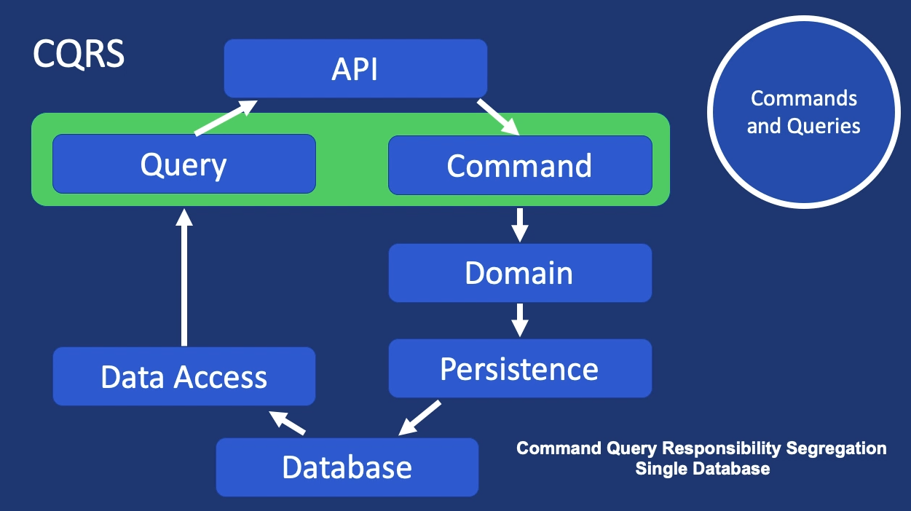
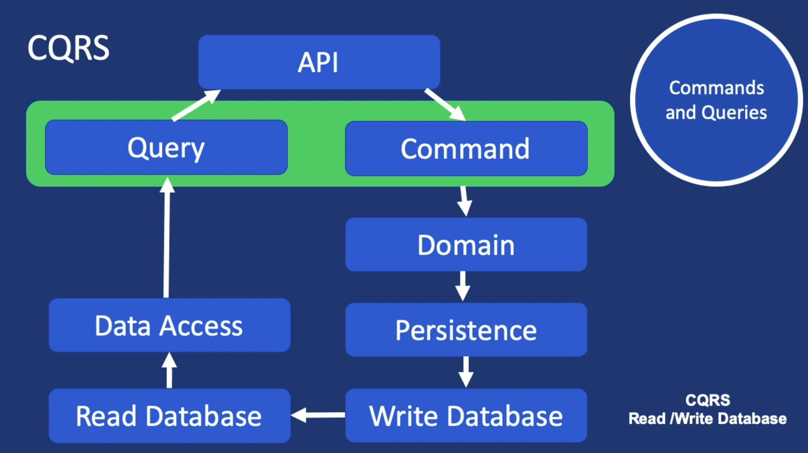
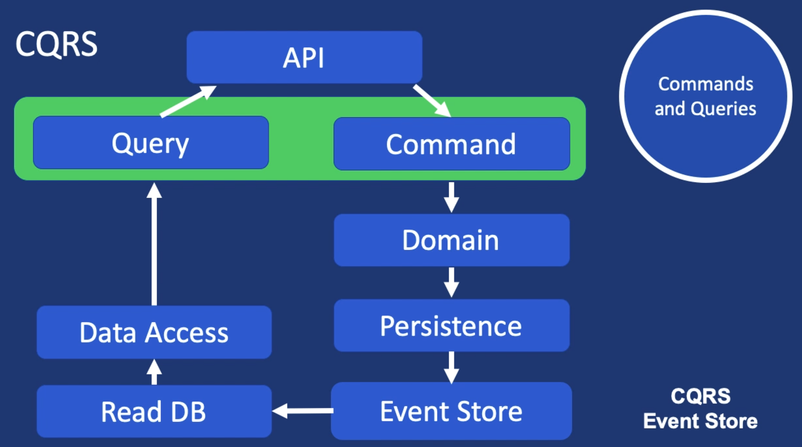

CQRS: 命令查询职责分离
我们将要做的是把 Command 和 Query 分离开来, 因为二者的不同点就在于是否会修改状态, 以及是否有返回数据. 这样的做法就是 CQRS, 即命令查询职责分离的缩写.
形式1: 读写同一个数据源
CQRS 的关注点是 APP 中的数据流转过程, 如下图所示:

Command 的数据是从上往下流向数据源的, 而 Query 的数据是从下往上流向 API 的.
形式2: 读写不同数据源
更复杂的例子就是分离查询和写入的数据库, 这样的实现可以很大程度保证性能, 如下图所示:

使用这种数据库分离结构的前提是当前的 APP 读取数据的频率远远高于写入数据的频率. 比如现代的社交网络 APP, 当发了一条动态后, 隔几秒钟才显示出来的情况用户也是可以接受的.
形式3: 使用 Event Store
还有一类做法是把命令数据流向一个 Event Store, 然后再同步到数据源中, 如下所示:

这个做法下, 将命令暂存到 Event Store 而非写入数据库, 这样的话, 通过 Event Store 中的 Event 就可以把当前 APP 状态的修改同步到数据源中. 这样的方式就类似通过 Event Store 来记账, 最后通过每个 Event 来修改数据的最终状态.